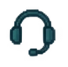
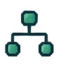

Complete Learning Pathways
When learning must build readiness across a larger body of work and completion matters, I design the connected experience, not just its individual courses.
Building and maintaining certification pathways has put me close to the whole system: objectives, practice, assessment, LMS delivery, records, reporting, learner support, and revision after launch.
Different needs, different solutions
A pathway is more than a collection of assets.
Microlearning, a job aid, a single interaction, and a focused course can each be the right answer. I choose a complete pathway when learners need to progress through connected information, practice, validation, and formal requirements toward readiness or a meaningful completion state.
Anatomy of a pathway
Several learning pieces become one accountable experience.
I have worked with multi-course structures, modules, reference materials, knowledge checks, practice, cumulative assessment, evaluations, learner feedback, reporting, and formal completion. The defining feature is not the number of screens; it is the connected route to a meaningful milestone.
Choose your route
Select the role that fits your work.
Role-based entry points connect shared content with what each audience needs to do next.
A route that fits the audience
Role-based entry keeps the experience relevant. Learners see the shared core and a clear next step for their responsibilities, so the pathway feels coherent from the start.
Operational and business weight
Complete pathways can carry higher-risk outcomes.
Formal programs can govern qualification, access, compliance records, or readiness for a next responsibility. I design the rules, support, and reporting around those consequences, not only the learning screens.
Records + compliance
Completion must mean something trustworthy.
Some pathways generate records an organization needs to retain, track, audit, or report. Assessment status, completion rules, certification, and LMS data must agree.
I design the assessment and delivery logic with that record in mind.
The pathway has an operational lifecycle.
Working across design, LMS delivery, assessment, reporting, maintenance, and direct learner support taught me to plan for the whole life of a program. Select a stage to see the work and its practical point of view.
01 / Design · Learning designer view
Start with the job and work backward.
I define the audience, decisions learners must make, approved sources, role routes, objectives, practice, assessment, and completion standard before the build becomes a collection of screens.
Keep technical depth that is useful as a resource; make required learning follow the seller task.
Working result: A pathway map with clear objectives, audience routes, review points, and validation gates.

Direct learner support belongs in the lifecycle. When completion affects what someone can do next, an access, enrollment, assessment, navigation, record, or certification-status problem can become a real work blocker.
Featured project
Cellular Networking Sales Certification
A multi-course certification for internal sellers and channel partners, rebuilt while the underlying portfolio and messaging were changing.
I owned the learning architecture, objectives, course structure, practice, assessments, many visual and interactive assets, learner experience, review coordination, and maintenance approach. SMEs and stakeholders validated product truth and business boundaries. The result was a connected pathway that had to work in the LMS and remain editable after launch.

Shared coreOne learner journey. Multiple connected responsibilities.